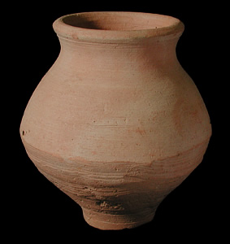

Type A
This type of pot is commonly found at Indus Valley sites. Pots like this with a narrow rim and wide body may have been used in everyday life for holding liquids or grains. It is made of fine clay and was probably made on a wheel, indicating that it would date from a period after that technology was in common use. One of the most important features of a pot like this is the definite shape of the body. Many pots have a curved body, but this one has a slight edge to its curve. Although this pot is undecorated, pots of this type which were decorated have been found. Some archaeologists believe that the decorated pots were used on special occasions or were used in burials.  This is a sherd painted with a typical Indus Valley design. |